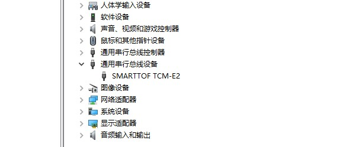

安装¶
推荐系统配置¶
| 配置项 | 推荐配置 |
|---|---|
| 操作系统 | Windows: Win7 32/64位 Win10 32/64位 |
| Linux: Ubuntu14.04 64位 Ubuntu16.04 64位 | |
| 内存 | 4G及以上 |
安装说明¶


模组安装¶
在windows系统下，运行SDK中windowsdrivers目录下的smarttof_usb_install.exe程序进行驱动的安装，正常安装过程如下图2-1所示。

驱动正常安装后，将USB电缆连接模组和PC,打开设备管理器中可以看到模组的设备名，如下图2-2所示
Linux下ubuntu14和16默认自带libusb，可能需要删除原来的libusb，在终端中重新运行sudo apt-get install libusb-1.0-0-dev进行安装，然后运行SDK目录边tool/SmartTofViewer目录下的smartTOFViewer工具查看设备是否连接正常。